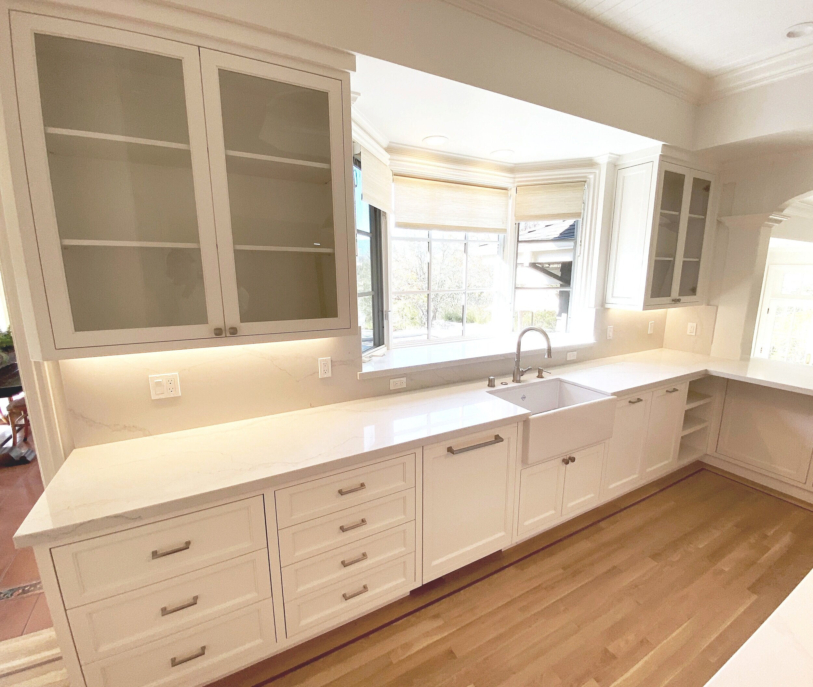
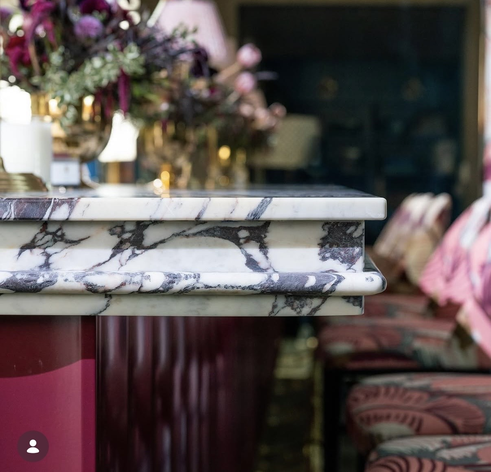

Early concept draft for review, built from your own project photos. Not a live site.
Why open on the mission, not a roomMost competitor sites open with a finished kitchen. This opens with your own words: "to build projects inspired by architects and designers, that exceeds the needs of our clients." A designer reads that in three seconds and knows exactly who you build for.

San Francisco, CA. Full-Service Since 1937.
To build projects inspired by architects and designers, that exceed the needs of our clients.
Modern or traditional, hand off the vision and trust it comes back exactly as drawn.
Why each service earns its own page eventuallyRight now these are six cards on one page. Split into six real pages, each one can rank for its own specific search, "architectural millwork San Francisco" is a different search than "custom cabinetry," and Google can only match a page to a search that specific if the page exists.
Services
Modern or traditional, one shop carries the whole vision
Full-service casework and millwork manufacturing, from a single custom kitchen to a full commercial buildout.
Commercial & Hospitality Fixtures
Bars, retail displays, and banquette seating built to hold up to real daily service.
Custom Casework & Cabinetry
Kitchens, vanities, and built-ins, personalized to the space rather than pulled from a standard line.
Architectural Millwork
Paneling, trim, and structural woodwork built into the architecture itself, not added after the fact.
Design & Specification
Involved from the architectural and planning stage, not handed a finished drawing to execute.
In-House Fabrication
Built in their own San Francisco shop, the kind of precision hardware and detail work seen in the craft strip below.
Installation & Completion
Carried through to the finished, installed piece, one point of responsibility from start to finish.
Why we lead with the honest gapThere isn't a page of five-star reviews to point to, and hiding that would look worse than naming it. Leading with what's actually verifiable, license, standing, real clients, reads as more credible than review volume ever would, especially to a prospect who already knows reviews can be bought.
Standing
Over ninety years perfecting the craft, modernizing the whole way.
Look us up before you call. A real license, a public track record, and real clients you can ask directly.
01
Eighty-nine years, same city
In business in San Francisco continuously since 1937. Real continuity, not a marketing number.
02
Top 20% of licensed California contractors
Ranked from public licensing and contractor performance records, not self-reported.
03
License #389545
Cabinet, Millwork, and Finish Carpentry. Bonded and workers' compensation insured, verifiable directly with the state.
04
Real clients, real places
Champion's Bar at the Olympic Club, Blue Bottle Coffee, Twitch. Real locations you can walk into and see the quality yourself.
05
Union shop
Carpenters on every crew. A real qualification signal on commercial and institutional work, not a decorative badge.
Why this answers questions instead of pitchingA prospect who reads exactly how a project runs before calling is already qualified when they call. This isn't just about being found, it's about who reaches out, someone who's read the real process and still wants to talk is a better lead than a cold click.
Process
From the first drawing to the finished install
Most shops start after the drawings are finished and stop when the piece ships. This is what "planning through completion" actually looks like step by step.
01
Planning & Specification
Involved from the architectural and planning stage, before anything is finalized elsewhere.
02
Design & Detailing
Every fixture detailed to the client's own specifications, not selected from a standard line.
03
Fabrication
Built in Arnold + Egan's own San Francisco shop, the same precision seen in the craft strip below.
04
Installation & Completion
Carried through to the finished, installed piece, one point of responsibility start to finish.
Why real names, not just categoriesChampion's Bar, Blue Bottle, Twitch. When a prospect can check a name themselves, it does more work than any description could, and it's the strongest proof you have precisely because there's no review page to lean on instead.
The Work
Hospitality, retail, wellness, residential. Same standard, every time.
The vision changes with every client. The precision doesn't.
01
Hospitality
Bars, restaurants, and private clubs, where the millwork has to hold up to a full service night after night.
Why modern and traditional, side by sideThe real worry a designer has isn't "can they build it," it's "can they build MY version of it." Putting the CNC-cut lattice screen next to a hand-detailed, crown-moulded kitchen answers that before anyone has to ask.
The Range
Modern precision. Traditional detail. Same hands.
Whatever the design calls for, it comes out of the same shop, to the same standard.
Modern Walnut lattice screen, CNC-cut
Modern Bronze filigree hardware, in the shop

Traditional Crown moulding, hand-detailed

Traditional Built-in library & fireplace
Why real answers beat a thin siteA site that's mostly photos and a few paragraphs has almost nothing for Google or an AI answer engine to actually match a real question to. Real guides, real service pages, even a page per city served, each one is a specific, findable answer instead of a vague impression. That's the difference between a nice-looking site and one that actually gets found.
From the Shop
Straight answers to the questions that come up before the first meeting
For the GCs, designers, and property owners weighing who to hire.
Hiring Guide
What "Full-Service" Actually Means When You're Hiring a Millwork Shop
The real difference between a shop that builds to a finished drawing and one that's involved from planning through completion.
The first guide is live now, built through RemodelerRank's AEO article pipeline. The other two are titled and planned, not yet written.
1937
Founded
89
Years in the Trade
4
Sectors Served
SF
San Francisco, CA
Built to move with youSan Francisco is accurate today. Once the Oakland shop is confirmed, this address updates everywhere at once, footer, schema, Google listing, in one pass, not scattered fixes across a dozen old citations later.
Start a Project
Modern or traditional, it's still just one shop to trust.
Bring the sketch, the inspiration photo, or just the idea. One team carries it from the first meeting to the final install, so the only thing you have to manage is the vision.